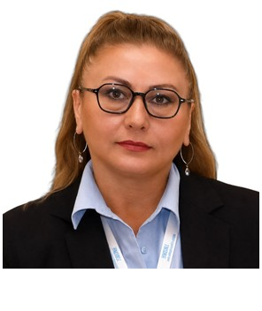

Profil
Afina Barmanbay Qarsdakı Qafqaz Universitetində Azərbaycan türkcəsi və ədəbiyyatı üzrə dosentdir. Dosent elmi adı 20 yanvar 2021-ci il tarixlidir. Azərbaycan Milli Elmlər Akademiyasında ədəbiyyat üzrə inteqrə olunmuş doktoranturanı bitirib. Dissertasiya Ehmed Cavad ve Türkiye adlanır. 2010-cu ildə müdafiə edib. Elmi rəhbər Bəkir Nəbiyevdir. Dərəcənin tarixi 12 yanvar 2011-dir. Azərbaycan dili və ədəbiyyatı üzrə bakalavr dərəcəsini Azərbaycan Dövlət Pedaqoji Universitetində alıb. Tarix 7 iyul 1994-dür. Təhsil 1989-cu ildən başlayır. 2017–2018-ci illərdə kafedra müdiri olub.
İş təcrübəsi
Qafqaz Universiteti, Qars, Türkiyə
20 January 2021Dosent
- Azərbaycan türkcəsi və ədəbiyyatı
Qafqaz Universiteti, Qars, Türkiyə
1 July 2016Müəllim heyəti
Qafqaz Universiteti
2017–2018Kafedra müdiri
Təhsil
PhD
12 January 2011Ədəbiyyat üzrə inteqrə olunmuş doktorantura. Dissertasiya: Ehmed Cavad ve Türkiye (2010). Elmi rəhbər: Bəkir Nəbiyev
Azərbaycan Milli Elmlər Akademiyası
Bakalavr dərəcəsi
7 July 1994Azərbaycan dili və ədəbiyyatı. Təhsil 1989-cu ildən
Azərbaycan Dövlət Pedaqoji Universiteti
Tədris
- 2024–2025 — Azərbaycan ədəbi dilinin tarixi; Azərbaycan ədəbiyyatı; müasir ədəbi proses — Kafkas University
Elmi rəhbərlik
- Magistratura — Tamamlanmış adlı dissertasiyalar -dədir, o cümlədən Əli və Nino, İlyas Əfəndiyev və Azərbaycan atalar sözləri
Nəşrlər
Kitablar və dərsliklər
1. C. Ya z ı l a n ul usa l / ul us la ra ra sı k i ta pl a r v e y a k i ta pl a rda k i böl üm l er: C 1. Y a z ı l a n ul us al / ul usl a ra rası k it a pl a r: 1. Gürcistan'dan Azerbaycan'a AĞIZ SÖZLÜĞÜ: Borçalı, Gazah, Akstafa, Tovuz, Gedebey, Şemkir, Gence (2024)., BARMANBAY AFİNA,SADIKLI Vasif, DBY Yayınları, Basım sayısı:1, Sayfa Sayısı 444, ISBN:978-625-6769-90-8, Türkçe(Bilimsel Kitap)
2. Azerbaycan Romantik Edebiyatında Vatan (Abbas Sehhet, Mehemmed Hadi, Abdulla Şaik) (2020)., BARMANBAY AFİNA, Bengü Yayınevi, Editör:Mitat Durmuş, Basım sayısı:1, Sayfa Sayısı 200, ISBN:978-605-7654-70-0, Türkçe(Bilimsel Kitap)
3. Ehmed Cavad ve Türkiye (2010)., MEMMEDLİ AFİNA, Elm ve Tehsil, Editör:Bekir Nebiyev, Basım sayısı:1, Sayfa Sayısı 167, ISBN:XXXX, Türkçe(Bilimsel Kitap)
4. Yayınevi, Editör:Mesut GÜN, Erdem DAĞISTANLIOĞLU, Basım sayısı:1, Sayfa Sayısı 161, ISBN:978-605-258-874-1, Türkçe(Bilimsel Kitap)
Kitab fəsilləri
1. TÜRK DÜNYASI ŞİİR ANTOLOJİSİ AZERBAYCAN ŞİİRİ, Bölüm adı:(Mehemmed Hadi) (2023)., BARMANBAY AFİNA, Türk Dil Kurumu Yayınları, Editör:Prof. Dr. Erdoğan UYGUR & Prof. Dr. İsmet ÇETİN, Basım sayısı:1, Sayfa Sayısı 18, ISBN:978-975-17-5658-9, Türkçe(Bilimsel Kitap)
2. TÜRK DÜNYASI ŞİİR ANTOLOJİSİ AZERBAYCAN ŞİİRİ, Bölüm adı:(Nigâr Refibeyli) (2023)., BARMANBAY AFİNA, Türk Dil Kurumu Yayınları, Editör:Prof. Dr. Erdoğan UYGUR & Prof. Dr. İsmet ÇETİN, Basım sayısı:1, Sayfa Sayısı 16, ISBN:978-975-17-5658-9, Türkçe(Bilimsel Kitap)
3. Mehmet İsmail Armağanı, Bölüm adı:(Abdulla Şaikin "Vatan" Piyesinde Vatan İdeali) (2022)., BARMANBAY AFİNA, Paradigma Akademi, Editör:Ayfer Aytaç, Basım sayısı:1, Sayfa Sayısı 9, ISBN:978-625-8187-20-5, Türkçe(Bilimsel Kitap)
4. Savaş Faslı. Firuz Mustafa., Bölüm adı:(Katiller) (2021)., BARMANBAY AFİNA, Green Print House, Basım sayısı:1, Sayfa Sayısı 250, ISBN:978-9952-37-245-8, Türkçe(Kitap Tercümesi)
5. Türk Dünyasına Adanmış Bir Ömür: Prof. Dr. Juliboy Eltazarov Armağanı, Bölüm adı:(Abdulla Şaik'in "Aras'tan Turan'a" Eserinde Kızıl Elma Ülküsü) (2021)., BARMANBAY AFİNA, İpak Yo'li, Basım sayısı:1, Sayfa Sayısı 237, ISBN:yok, Türkçe(Bilimsel Kitap)
6. 6431699) Dil, Edebiyat ve Eğitim Çalışmaları, Bölüm adı:(“Çırpınırdı Gara Deniz” Şairi Ehmed Cavadın Eserlerinde Balkan ve Birinci Dünya Savaşı) (2020)., BARMANBAY AFİNA, Sonçağ Yayıncılık, Editör:İlkin Gulusoy, Basım sayısı:1, Sayfa Sayısı 231, ISBN:978-625-7918-18-3, Türkçe(Bilimsel Kitap)
7. Sosyal Bilimler Alanında Akademik Araştırmalar, Bölüm adı:(Gurbet Şairi Ağabeyim Ağa Ağabacı ve Vatan Bağı) (2020)., BARMANBAY AFİNA, Duvar Yayınları, Editör:Dursun BALKAN, Basım sayısı:1, ISBN:978-625-7767-65-1, Türkçe(Bilimsel Kitap)
8. Filoloji Alanında Yeni Ufuklar, Bölüm adı:(Hüseyin Cavid’in Topal Teymur Piyesinde Emir Timur Karakteri) (2019)., BARMANBAY AFİNA, Gece Akademi, Editör:Mehmet C em ODACIOĞLU, Basım sayısı:1, Sayfa Sayısı 19, ISBN:978-605-7749-09-3, Türkçe(Bilimsel Kitap)
9. Azerbaydjanskaya Respublika - 100, Bölüm adı:(İstoriko-politiceskaya Cennost Tragedii İblis Spustya 100 let) (2018)., BARMANBAY AFİNA, Nestor-İstoria, Editör:Şahnaz Kamalova, Basım sayısı:1, Sayfa Sayısı 17, ISBN:978-5-4469-1359-6, Rusça(Bilimsel Kitap)
Rəylənmiş (peer-reviewed) jurnal məqalələri
1. Bölgesi. Recep Tayyip Erdoğan Üniversitesi Sosyal Bilimler Dergisi, 11(1), 75-85., Doi: 10.34086/rteusbe.1485415 (Yayın No: 9102165) 2. BARMANBAY AFİNA (2023). “Âşık Alı’nın Türkiye Seferi”nin Üç Varyantı. Milli Folklor, 18(138), 119- 130., Doi: 10.58242/millifolklor.1061022
2. BARMANBAY AFİNA (2022). Abdurrahman Ağa Dilbazoğlu ve Gence Hanlığı’nın İşgaline Dair Şiirleri. Türk Dünyası Dil ve Edebiyat Dergisi(53), 133-186., Doi: 10.24155/tdk.2022.200
3. BARMANBAY AFİNA (2022). Ehmed Cavad ve Türk Dünyası. Türkologiya(1), 125-137.
4. BARMANBAY AFİNA (2021). Alfred de Musset’in “Mayıs Gecesi” Şiirinin Abbas Sehhet Sanatına Etkisi. INTERNATIONAL JOURNAL OF SOCIAL, HUMANITIES AND ADMINISTRATIVE SCIENCES, 7(45), 2151-2157.
5. BARMANBAY AFİNA (2021). Celil Memmedguluzâde'nin "Kamança" Piyesinde Savaş, Şeref ve Hümanizm Meseleleri. Akademik Tarih ve Dusunce Dergisi, 8(3), 44-56., Doi: 10.46868/atdd.163
6. BARMANBAY AFİNA (2020). Vidadi, Vagif ve Zakir’in Turnalar Şiirleri Üzerine Bir İnceleme. Motif Akademi Halkbilimi Dergisi, 13(31), 1141-1155.
7. BARMANBAY AFİNA (2020). Celil Memmedguluzade’nin Hayatı ve Mücadelesi. Atatürk Üniversitesi Türkiyat Araştırmaları Enstitüsü Dergisi(68), 197-212.
8. BARMANBAY AFİNA (2019). Doğumunun 150. Yılı Anısına: Celil Memmedguluzade’nin Anamın Kitabı Piyesinde Azerbaycan İdeali. Türk Dünyası Dil ve Edebiyat Dergisi(48), 83-114., Doi: 10.24155/tdk.2019.112
9. 17.02.2017, Hocalı Katliamının 25.Yıldönümü Dolayısıyla Düzenlenen SESİMİZE S E S VERENLER adlı ULUSLARARASI ŞİİR YAZMA YARIŞMASI, (No: 199921) D i ğ e r Ya yı nl a r 1. MEMMEDLİ BARMANBAY AFİNA (2017). Azerbaycan Yurt Bilgisi Dergisinde (1932-1934) Asiklar Üzerine Araştırma. Folklor ve Etnografya(1), 95-102. (Ulusal) (Hakemsiz) (MAKALE Özgün Makale)
10. Kitap Kritiği, BARMANBAY AFİNA (2024). Cengiz Aytmatov Fenomeni ve Azerbaycan, Mehman Hasanlı. Turkuaz Uluslararası Türk Dünyası Bilimsel Araştırmalar Dergisi, 5(1), 60-64., Doi: T e k n i k N ot, V a k a T a k di m i, A ra ş t ı r m a no t u vb. 10.54970/turkuaz.1474604
11. Yorum, BARMANBAY AFİNA (2019). Türklük Duygu ve Düşüncelerinin Tercümanı ”Bizim Ahıska” ve Bizim Yunus Zeyrek. Bizim Ahıska, 15(54-55), 12-12.
12. Kısa Makale, BARMANBAY AFİNA (2017). Doğumunun 125, Vefatının 80. Yılında Ahmet Cevat. Bizim Ahıska, 13(47), 25-26.
13. Kısa Makale, MEMMEDOVA SARAÇLI AFİNA (2010). Azerbaycan Milli İstiklal Şairi Ahmed Cavad ve Acara. Bizim Ahıska, 6(18), 29-30.
14. Kısa Makale, MEMMEDLİ AFİNA (2008). Azerbaycan İstiklal Şairi Ahmet Cevat ve Türkiye. Bizim Ahıska, 4(9), 24-26.
15. Kısa Makale, MEMMEDLİ AFİNA (2008). Ahmed Cavad Türkiye’de (1912-1918). Azerbaycan Türk Kültür Dergisi, 56(373), 34-36.
16. Kısa Makale, MEMMEDLİ AFİNA (2007). Ahmet Cevad’ın Türkiye’de Hayriyecilik Faaliyeti. Mor Taka (Şiir ve Kent Kültürü)(9), 128-129.
Konfrans məqalələri və tezisləri
1. BARMANBAY AFİNA (2021). Abbas Sehhet’in Hayatı ve Ermeni Vahşeti. XIII- Science and Education: Preserving the Past, Creating the Future- 24 nisan, 61-65. (Tam Metin Bildiri/Sözlü Sunum)
2. BARMANBAY AFİNA (2021). Azerbaycan-Türkiye-Fransa Üçgeninde "Yâd Et" Şiirleri. The XV International Scientific Symposium “Intercultural Relations in the Modern World", 41-45. (Tam Metin Bildiri/Sözlü Sunum)
3. BARMANBAY AFİNA (2021). "Bakü Müslüman Cemiyet-i Hayriyesi"nin Kars'taki Faaliyetine Dair. The XIX International Scientific Symposium “Europe and Asia: A Millennial Neighbourhood”, 33-37. (Tam Metin Bildiri/Sözlü Sunum)
4. BARMANBAY AFİNA (2023). Mirza Bakış Nadim ve Azerbaycan Hanlıklarının Çarlık Rusya Tarafından İşgaline Dair Manzumesi. International Scientific Symposium: "The Great Silk Road: The Bridge Between East and West", 27-30. (Tam Metin Bildiri/Sözlü Sunum)
5. BARMANBAY AFİNA (2024). Mehemmed Hadi Şiirlerinde Din ve Maarif İlişkisi. International Scientific Symposium Karabakh and West Azerbaijan: Triumph of Victory, 71-79. (Tam Metin Bildiri/Sözlü Sunum)
6. BARMANBAY AFİNA (2024). Women in the Stories "Butterfly" and "Handsome Man" by Neriman Abdulrahmanli. International Scientific Symposium "Women Through the Ages: Strength, Strategy, and Leadership", 54-61. (Tam Metin Bildiri/Sözlü Sunum)
7. BARMANBAY AFİNA (2024). The Issue of Girls' Education in Ahmad Javad's stories "The Daughter of Blind" and "Leyla", Written During the Soviet Period. International Scientific Symposium "Women Through the Ages: Strength, Strategy, and Leadership", 36-43. (Tam Metin Bildiri/Sözlü Sunum)
8. BARMANBAY AFİNA (2024). ŞAİR AHMED CEVAD’IN BİLİNMEYEN KARS MEKTUPLARI. EUROPEAN CONFERENCES 5th INTERNATIONAL CONFERENCE ON HUMANITY AND SOCIAL SCIENCES, 211- 218. (Tam Metin Bildiri/Sözlü Sunum)
9. BARMANBAY AFİNA (2024). BÜYÜCÜ İLE ÇIRAĞI HAKKINDAKİ AZERBAYCAN MASALLARININ VARYANTLARI. EUROPEAN CONFERENCES 5th INTERNATIONAL CONFERENCE ON HUMANITY AND SOCIAL SCIENCES, 219-226. (Tam Metin Bildiri/Sözlü Sunum)
10. BARMANBAY AFİNA (2024). “AH VAH” VE “OHHAY İLE EHMED” İSİMLİ AZERBAYCAN MASALLARI ÜZERİNE BİR İNCELEME. I. Bilsel Uluslararası Aspendos Bilimsel Araştırmalar Kongresi, 197-208. (Tam Metin Bildiri/Sözlü Sunum)
11. BARMANBAY AFİNA (2024). NERİMAN ABDÜLRAHMANLI VE ÖDÜLLÜ HİKÂYESİ “HARABELER ALTINDA HATIRALAR”. I. Bilsel Uluslararası Aspendos Bilimsel Araştırmalar Kongresi, 209-215. (Tam Metin Bildiri/Sözlü Sunum)
12. BARMANBAY AFİNA (2023). ŞAİR AHMED CEVAD’IN 1914’TE YAZDIĞI HİKÂYELERİ ÜZERİNE BİR İNCELEME. International Scientific Symposium: "Haydar Aliyev and Türkiye" (Tam Metin Bildiri/Sözlü Sunum)
13. BARMANBAY AFİNA (2023). Lirik Ben ve Vatan Karşılaşması. The XXXVI International Scientific Symposium "Multidisciplinary Studies of the Turkish World", 52-56. (Tam Metin Bildiri/Sözlü Sunum)
14. BARMANBAY AFİNA (2023). Şair Ağacan ve “Türkiye Seferi"nin Üç Varyantı. 7th International Conference on Social Sciences, 228-237. (Tam Metin Bildiri/Sözlü Sunum)
15. BARMANBAY AFİNA (2023). “MEHEMMED’İN KARS SEFERİ” İSİMLİ ÂŞIK RİVAYETİ ÜZERİNE BİR ARAŞTIRMA. 4. International Anatolian Scientific Research Congress, 1365-1372. (Tam Metin Bildiri/Sözlü Sunum)
16. BARMANBAY AFİNA (2023). HÜRRİYET ŞAİRİ MEHEMMED HÂDİ’NİN MAKALELERİNDE İSTİKBAL. 4. International Anatolian Scientific Research Congress, 1373-1380. (Tam Metin Bildiri/Sözlü Sunum)
17. BARMANBAY AFİNA (2023). Mehemmed Hadi’nin "Arzu-yi Dil" ve “Dilek Ölmez” Şiirleri Üzerine Bir İnceleme. 7th International Conference on Social Sciences, 238-244. (Tam Metin Bildiri/Sözlü Sunum)
18. BARMANBAY AFİNA (2021). Sürgündeki Şair Mustafa Ağa Arif ve “Ağlaram” Şiiri. Fifth International Conference on Economics & Social Sciences [IOCESS2021a], 745-757. (Tam Metin Bildiri/Sözlü Sunum)
19. BARMANBAY AFİNA (2019). Celil Memmedguluzade’nin Kamança Piyesinde Savaş, Şeref ve Hümanizm Meseleleri. Bilim, Kültür ve Eğitim: 21. Yüzyılda Bilimin Gelişiminin Güncel Sorunları, 30-36. (Tam Metin Bildiri/Sözlü Sunum)
20. BARMANBAY AFİNA (2019). Stikhi Na Temu Turana i Turechkoy Armii v Period Azerbaydjanskoy Demokraticheskoy Respubliki. ”Bilim ve Eğitimin Güncel Sorunları” I. Uluslararası Sempozyum, 267-275. (Tam Metin Bildiri/Sözlü Sunum)
21. BARMANBAY AFİNA (2019). Celil Memmedguluzade ve Din. ”Bilim ve Eğitimin Güncel Sorunları”. I. Uluslararası Sempozyum, 249-256. (Tam Metin Bildiri/Sözlü Sunum)
22. BARMANBAY AFİNA (2018). Azerbaycan Yurt Bilgisi Dergisindeki 28 May Münasibetile Yazılan Megalelerde Edebi Proses. Azerbaycan Elyazmaları Dünya Kitabhanalarında mövzusunda III beynelhalg elmi konfrans, 10-12. (Tam Metin Bildiri/Sözlü Sunum)
23. BARMANBAY AFİNA (2018). Azerbaycan Yurt Bilgisi Dergisindeki 28 Mayıs 1918 Anısına Yazılmış Makalelerde Cumhuriyetin Edebi - Tarihi İzleri. 100. Yılında Azerbaycan Cumhuriyeti Uluslararası Kongresi, 19-29. (Tam Metin Bildiri/Sözlü Sunum)
24. BARMANBAY AFİNA (2018). Mühacirlerin 28 May Xatirelerinde Azerbaycanın Müstegilliyine Geden Yol. Gafgazda dövletlerarası münasibetler: 100 il evvel ve müasir dövr, 1, 50-55. (Tam Metin Bildiri/Sözlü Sunum)
25. BARMANBAY AFİNA (2018). 100. Yılında İblis Piyesinde Turan ve Şark Meselesi. Azerbaycan Cumhuriyeti - 100: Müslüman Doğu’da ilk Parlamentli Cumhuriyet, 671-675. (Tam Metin Bildiri/Sözlü Sunum)
26. BARMANBAY AFİNA (2017). Karabağlı Sarı Aşık Aslen Nerelidir?. I.Uluslararası Kafkasya Halk Kültürü Kongresi, 1, 214-223. (Tam Metin Bildiri/Sözlü Sunum)
27. BARMANBAY AFİNA (2016). Azerbaycan Edebi Tenkit Tarihinde İstiklal Mücadelesinin İlk İzleri. 2016 Hoca Ahmet Yesevi Yılı Anısına Uluslararası Türk Dünyası Eğitim Bilimleri ve Sosyal Bilimler Kongresi, 3, 55-62. (Tam Metin Bildiri/Sözlü Sunum)
28. BARMANBAY AFİNA (2016). Azerbaycan Yurd Bilgisi dergisinde Türk Halglarının Azadlıg Mübarizesinin Bedii Eksi. Türkoloji Elmi-Medeni Hereketde Ortag Deyerler ve Yeni Çağırışlar, 2, 342-342. (Özet Bildiri/Sözlü Sunum)
29. yıllarında Azerbaycan Edebiyatında Türkçülük. Azerbaycanşinaslık: Geçmişi, Bugünü ve Geleceği (Dil, Folklor, Edebiyat, Sanat, Tarih) konulu Uluslararası Sempozyum, 1-9. (Tam Metin Bildiri/Sözlü Sunum)
30. 3328000) E. Ul us a l bili ms el t opla ntı la rda s u n u l a n v e bildiri ki t a pla rı nda 1. BARMANBAY AFİNA (2024). GÜRCİSTAN’DAKİ BORÇALI TÜRKLERİNİN KÜLTÜREL MİRASININ KORUNMASI VE AKTARIMI MESELESİ. Türkiye Yüzyılında I. Uluslararası Türk Diasporası Sempozyumu (Tam Metin Bildiri/Sözlü Sunum)